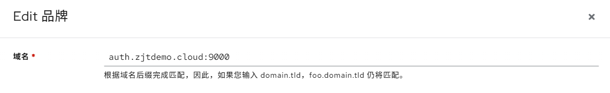
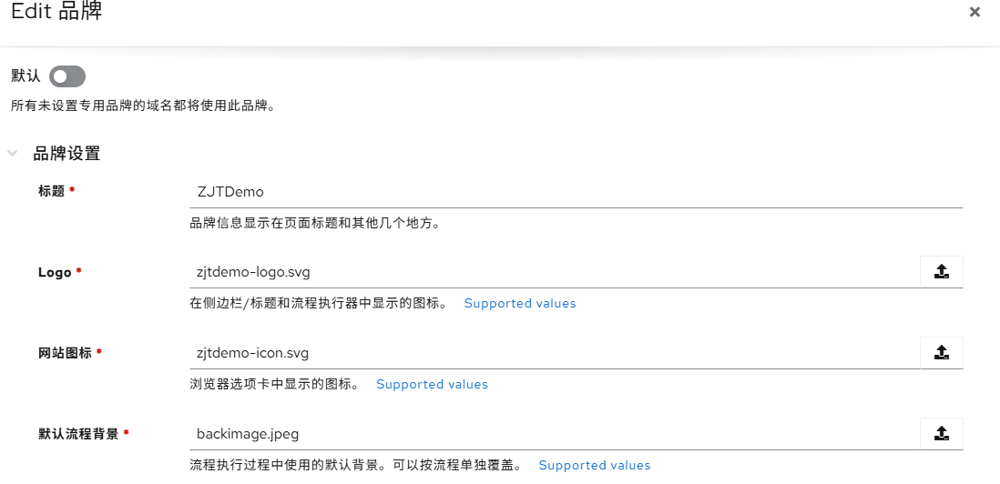
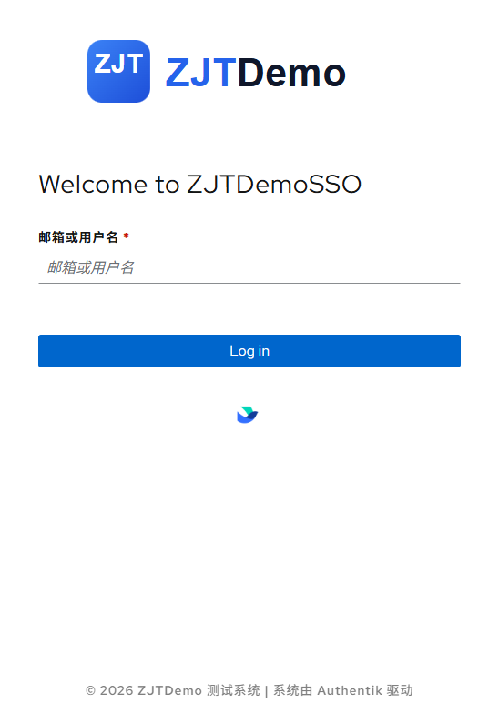

概述
authentik 登录页底部默认会显示一组站点链接（Help、Terms 等）。如果这些链接对内部系统没有意义，可以通过创建 Brand（品牌）并注入自定义 CSS，把它们替换成一行版权/系统说明文字。
一、创建品牌
进入 Customization → Brands → Create，填写名称并绑定默认的「default」Domain，保存后把它设为默认品牌。品牌创建后即可在该品牌下编辑自定义 CSS。


二、自定义 CSS
在品牌的 Custom CSS 中填入：
/* 隐藏默认的站点链接列表 */
ak-brand-links::part(list),
ak-brand-links ul[aria-label="Site links"] {
display: none !important;
}
/* 用一行版权信息替代 */
ak-brand-links::after {
display: flex;
justify-content: center;
align-items: center;
width: 100%;
margin-top: 10px;
content: "© 2026 ZJTDemo 测试系统 | 系统由 Authentik 驱动";
font-size: 14px;
font-weight: 500;
color: rgba(0, 0, 0, 0.5);
font-family: inherit;
}
说明：
ak-brand-links是 Web Components 自定义元素，链接列表位于其 shadow DOM 中，因此需要用::part(list)才能命中并隐藏。::after伪元素在容器内生成新的版权文字，flex布局保证水平居中。- 版权文字中的
|为普通字符，实际 CSS 中无需转义。 - 主题为深色时，可把
color调整为浅色，例如rgba(255, 255, 255, 0.6)。
保存后刷新登录页即可看到效果。

三、验证
- 用无痕窗口打开登录页，确认默认链接已消失、版权文字居中显示。
- 在移动端窄屏下检查文字是否换行正常。
- 若品牌未生效，检查 Domain 绑定是否正确、品牌是否已设为默认。
本文由 WorkBuddy AI 编辑整理。